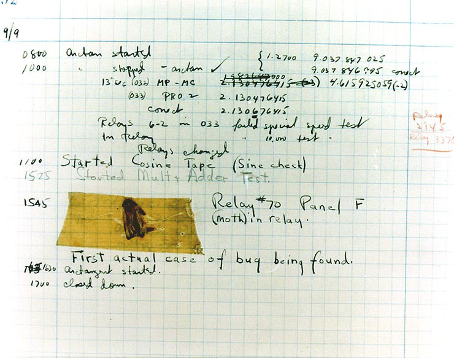
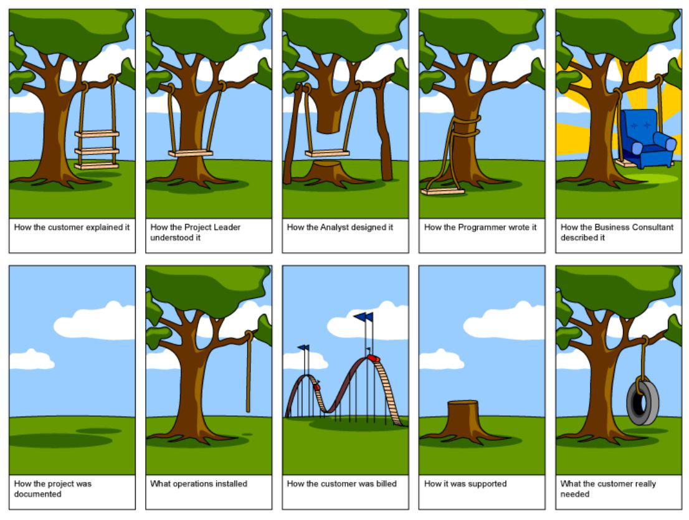
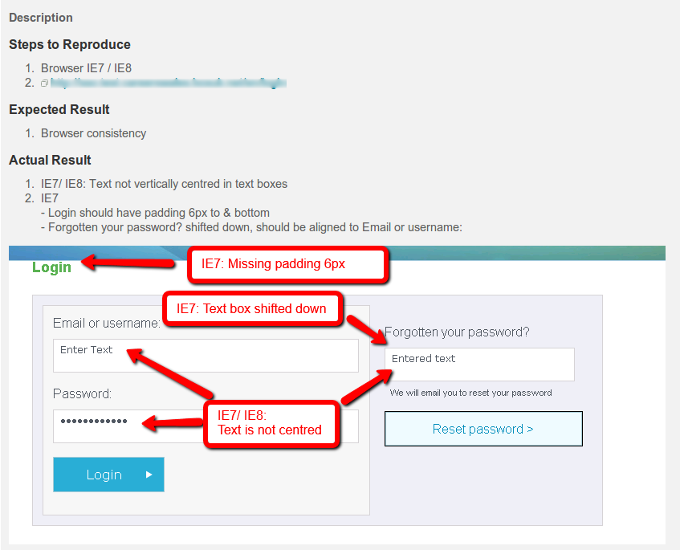

Bu
Big Sean
Not Big Sean


What is a bug?
A software bug is an error, flaw, failure, or fault in a computer program or system that produces an incorrect or unexpected result, or causes it to behave in unintended ways.http://en.wikipedia.org/wiki/Software_bug
Bugs make users sad
Bugs make users angry
Why is it called a bug?
We all know the story about the moth right?
accually is Edison
The concept of errors in software dates back to Ada Lovelace notes on the analytical engine in 1843
Thomas Edison used the term 'bug' when referring to faults/difficulties in some of his inventions
It has been just so in all of my inventions. The first step is an intuition, and comes with a burst, then difficulties arise — this thing gives out and [it is] then that "Bugs" — as such little faults and difficulties are called — show themselves and months of intense watching, study and labor are requisite before commercial success or failure is certainly reached.Thomas Edison 1878
Why do bugs occur?
Human error
/* This is bad. Reaaly bad. It's a really, really bad hack.
* If you're an employee of Intertrode Communication,
* then I'm really, really sorry that you have to maintain
* this. I was honestly planning on removing this tomorrow,
* but I've been known to forget things like this. It happens.
*
* So here's the thing. I can't seem to figure out why the AccountId
* variable isn't set. I've looked and looked, but I gotta leave now.
* Anyway, I've found that I can just grab the AccountID from
* the debugging logs. I suppose that to fix it, you'd
* have to locate where it's clearing out the ID.
*
* Again, I'm sorry.
*/
http://www.badprogramming.com/code/Retrieving-an-accountId-in-the-log
Poor/misunderstood requirements
Unconsidered scenarios
Outside forces
[GET] http://savewalterwhite.com?page=x'; DROP TABLE members; --
What kinds of bugs can we come across?
Arithmetic bugs
Logic bugs
Syntax bugs
Resource bugs
Multi-threading bugs
Interfacing bugs
Performance bugs
Teamworking bugs
Other bugs
Arithmetic bugs
Logic bugs
Syntax bugs
Resource bugs
Multi-threading bugs
Interfacing bugs
Performance bugs
Teamworking bugs
Other bugs
Division by zero
var deaAgents = ['Hank Schrader', 'Steven Gomez'];
var methHeads = [];
var agentsPerMethHead = deaAgents.length / methHeads.length
alert(agentsPerMethHead); // Infinity
Arithmetic over/underflow (e.g. Y2K38)
var waltsBalance = 344324070495708573409874598734590728;
alert(waltsBalance); // 3.4432407049570856e+35
alert(parseInt(waltsBalance)); // 3
Loss of arithmetic precision
var i = "010";
alert(parseInt(i)); // 8
Arithmetic bugs
Logic bugs
Syntax bugs
Resource bugs
Multi-threading bugs
Interfacing bugs
Performance bugs
Teamworking bugs
Other bugs
Infinite loops/recursion
while (true) {
alert('Better call Saul!');
}
Off by one error
var crew = ['Walter White', 'Jesse Pinkman', 'Skinny Pete', 'Badger'];
alert(crew[crew.length]); // undefined
Arithmetic bugs
Logic bugs
Syntax bugs
Resource bugs
Multi-threading bugs
Interfacing bugs
Performance bugs
Teamworking bugs
Other bugs
Assignment <> equality
var crew = ['Walter White', 'Jesse Pinkman', 'Skinny Pete', 'Badger'];
for (var i = 0; i < crew.length; i++) {
if (crew[i] = 'Walter White') {
alert('I am the one who knocks');
}
}
Arithmetic bugs
Logic bugs
Syntax bugs
Resource bugs
Multi-threading bugs
Interfacing bugs
Performance bugs
Teamworking bugs
Other bugs
Using an uninitialised variable
var k, i;
for (i = 0; i < 10; i++) {
k = k + 1;
}
alert(k); // NaN
Access violations
Segfaults, buffer overflow etc.
Null pointer dereference
public class CrystalMeth {
private float purity;
public float getPurity() {
return purity;
}
}
CrystalMeth product = null;
product.getPurity() // NullPointerException
Resource leaks
Memory leaks etc.
Arithmetic bugs
Logic bugs
Syntax bugs
Resource bugs
Multi-threading bugs
Interfacing bugs
Performance bugs
Teamworking bugs
Other bugs
Deadlock (chicken or egg)
Two or more competing actions waiting for the other to finish.
Race condition
Assumption that one event or task finished before another begins.
Arithmetic bugs
Logic bugs
Syntax bugs
Resource bugs
Multi-threading bugs
Interfacing bugs
Performance bugs
Teamworking bugs
Other bugs
Incorrect API usage
Incorrect protocol implementation
Incorrect hardware handling
Incorrect assumptions of a particular platform
Arithmetic bugs
Logic bugs
Syntax bugs
Resource bugs
Multi-threading bugs
Interfacing bugs
Performance bugs
Teamworking bugs
Other bugs
High code complexity
Little to no caching
Inefficient disk/memory access
Arithmetic bugs
Logic bugs
Syntax bugs
Resource bugs
Multi-threading bugs
Interfacing bugs
Performance bugs
Teamworking bugs
Other bugs
Unpropagated updates
e.g. changing one instance of getQuality() to getPurity() but not others (DRY ftw!)
Poor/out of date comments
A developer could develop according to incorrect or out of date comments in the code.
Poor documentation
Similar to above, if docs are out of date or incorrect, the developer may implement incorrectly also.
Merge problems
A bug could be introduced from a bad merger of code. Unresolved conflicts, aggressive SCM merging etc.
No standards
Walter does things using the x method, Jesse uses the y method. This crosshatch of standards results in a weak and impure product.
Arithmetic bugs
Logic bugs
Syntax bugs
Resource bugs
Multi-threading bugs
Interfacing bugs
Performance bugs
Teamworking bugs
Other bugs
Heisenbug
Heisenbug is a computer programming jargon term for a software bug that seems to disappear or alter its behavior when one attempts to study it.http://en.wikipedia.org/wiki/Heisenbug
Often caused from debugging actually changing the program's operating environment
A Heisenbug is the kind of bug we don't want
Bohr bug
A repeatable bug; one that manifests reliably under a possibly unknown but well-defined set of conditions.http://www.catb.org/jargon/html/B/Bohr-bug.html
The opposite of a Heisenbug
A Bohr bug is a bug that is easily repeatable
A Bohr bug is the kind of bug we want
B.A.D. - Broken As Designed
Said of a program that is bogus because of bad design and misfeatures rather than because of bugginess.http://www.catb.org/jargon/html/B/BAD.html
Tree analogy
If a product, feature, architecture is poorly designed, you're gonna have a bad time
Schroedinbug
A design or implementation bug in a program that doesn't manifest until someone reading source or using the program in an unusual way notices that it never should have worked, at which point the program promptly stops working for everybody until fixed.http://www.catb.org/jargon/html/S/schroedinbug.html
Fractal bug
A bug, after which its resolution is found, reveals additional self-similar bugs elsewhere in the code, after which they are fixed, likewise appear elsewhere still.http://c2.com/cgi/wiki?FractalBug
Hindenbug
A bug with catastrophic behaviour
Not always a bug, can be from human error/mistake
Named after the Hindenburg disaster
P.E.B.K.A.C.
Problem Exists Between Keyboard And Chair
In other words a user error
Other terms exist such as 'ID10T' (I-D-ten-T), pilot error etc.
Display (IE) Bug
and many others...
Fencepost error
Aliasing bug
Stale pointer bug
Killer poke
Wrap around
Magic smoke
Black art
Cosmic rays
Memory smash
Bit rot
Voodoo programming
Dead chicken waving
Shared vocabulary
Do not underestimate this
Allows us to look at bugs at a higher level of abstraction
Allows us to look at common causes of certain kinds of bugs and thus common solutions
Can be domain specific
Prevention > Cure
What can we do to prevent bugs?
Write less code
Programming style
Defensive programming, coding standards, KISS, DRY etc.
Programming techniques
Can an exception be avoided? Is there a better alternative?
Take advantage of language features
Type hints, assertions, contracts etc.
Take advantage of IDE features
Linting, Inspections etc.
Short, concise user stories
Rather than a monolithic specification, which is hard to understand, let alone implement.
Be agile, iterate
Code Analysis
Continuous integration
Automated testing
Mess detection, complexity analysis, copy paste analysis etc.
Monitoring
Average response time, uptime, error logs etc.
Tools like New Relic etc.
Communication
Ensure code comments are concise
Keep on top of documentation
Knowledge sharing
Shared ownership of code
Education
Make things simple
Do everything you can to help the user
Ditch IE (< 8)
Usage of IE7 has dipped below 1%
Get supported browsers locked down early
Managing bugs
Bugs are inevitable and should never be ignored
Bugs should be categorised and prioritised
Note, the severity of a bug is not the same as it's importance for fixing. Consider triage.
Use a good bug tracking tool (e.g. not bugzilla)
Use a good debugging tool
Ensure all bugs are managed in one place
How bugs are reported is key
Have a good bug report template or similar
Example bug report
Not all bugs have to be fixed!
Some bugs may in fact be features!
A bug can be useful and something your users prefer (gmail's undo, lara croft)
Bugs can sometimes be deemed too low priority to spend time fixing
It is not economical to fix bugs of such low severity
There could be new work not yet released which inadvertently fixes the reported bug
PEBKAC
Be careful about rewarding bug fixes
Rewards for number of bugs fixed can promote fixes of simple bugs over important ones
Don't rank developers by bug count
Great way to reduce confidence, lack of volunteers for complex problems etc.
given enough eyeballs, all bugs are shallowhttp://en.wikipedia.org/wiki/Linus%27s_Law
Benefits of open source
Do you really need to write that library or can you use that popular open source library with lots of eyeballs?
Why dropping your database on a production box isn't a big deal..
(although should be avoided at all costs of course!)
June 4 1996 - The European Space Agency's Ariane 5 Flight 501 was destroyed 40 seconds after takeoff
The US$1 billion prototype rocket self-destructed due to a bug in the on-board guidance software.
A bug in the code controlling the Therac-25 radiation therapy machine was directly responsible for at least five patient deaths in the 1980s when it administered excessive quantities of X-rays.
A Medtronic heart device was found vulnerable to remote attacks in March 2008
Smart ship USS Yorktown was left dead in the water in 1997 for nearly 3 hours after a divide by zero error
Y2K / Y2K38
After 03:14:07 UTC on 19 January 2038 - unix timestamp will 'wrap around' due to integer overflow
If you're storing timestamps in an integer field in your database you may want to consider updating
MySQL's UNIX_TIMESTAMP() function will return 0 after that date
Thanks!
@jenko
All imagery copyright of AMC, all rights reserved etc.
Further reading...
http://en.wikipedia.org/wiki/Software_bug
http://c2.com/cgi/wiki?BugTheory
http://www.catb.org/jargon/
http://www.quora.com/Software-Engineering/What-are-the-best-examples-of-software-bugs-that-became-features-a-k-a-misbugs
http://www.businessinsider.com/10-bugs-that-became-features-2012-11?op=1